|
KBHZ - Roda JC (1-0) 7 januari 2006
|
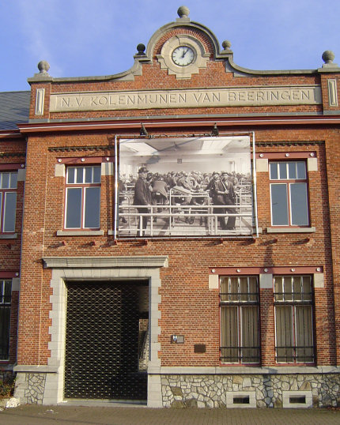
Vanmiddag was er een oefenwedstrijd tussen de Belgische tweedeklasser
KBHZ en Roda JC in het stadje Beringen dat sinds september 2005 over
een schitterend mijnmuseum beschikt.
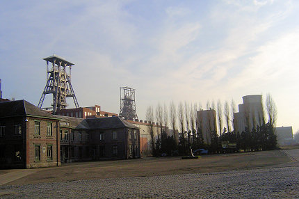
De steenkoolmijn van Beringen werd in 1989 definitief gesloten.
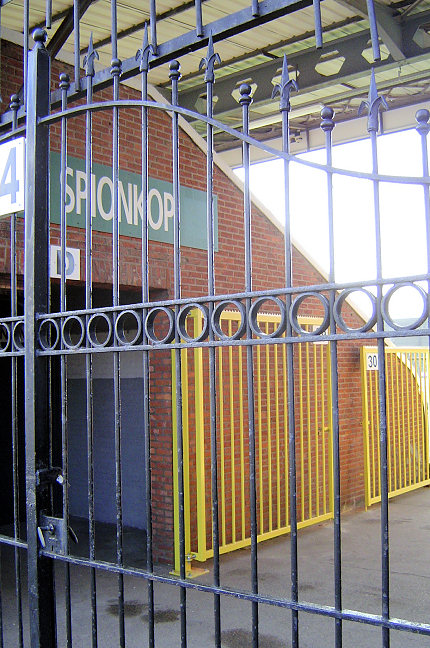
Toegangspoort tot de "Spionkop", het domein van de meest fanatieke
supporters van KBHZ.
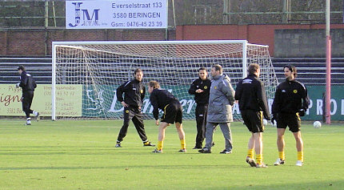
Bijzondere interesse gold Simon Cziommer, de nieuwe middenvelder bij
Roda JC.
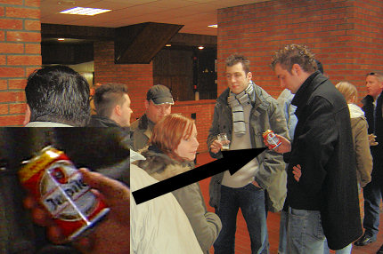
Sommigen hadden echter meer oog voor een Belgische tractatie.
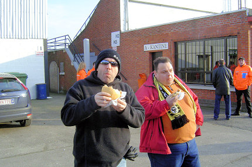
Izzie staat alweer op achterstand tegen Matje. Hup doorburgeren
kerel!
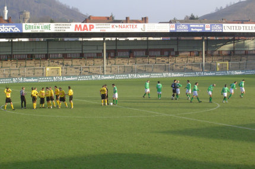
Aftrap met Kujovic, Senden, Voigt, Kah, Lachambre, Van Dijk, Cziommer,
Bodor, Cristiano, Sergio en Oper.
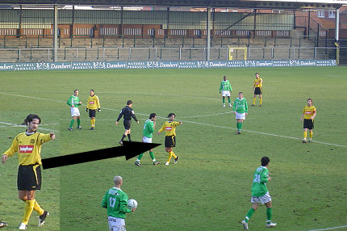
Roda had in nieuwkomer Cziommer meteen een man die de lijnen uitzet,
sterk communiceert EN de strijd aangaat.
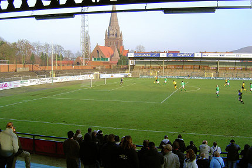
Een afgekeurd doelpunt van Oper en enkele schoten op het houtwerk
illustreerden de overmacht van Roda.
Op de achtergrond staat één van de mooiste Limburgse mijnkathedralen.
De kerk is tussen 1939 en 1943 opgetrokken in Byzantijnse stijl.
De donkere galerijen staan symbool voor de ondergrondse mijninfrastructuur.
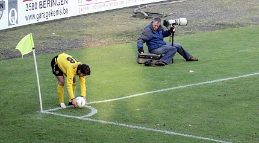
Simon mocht de meeste hoekschoppen nemen.
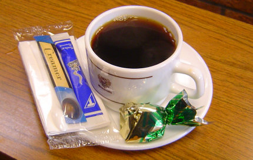
Ruststand: 0-0.
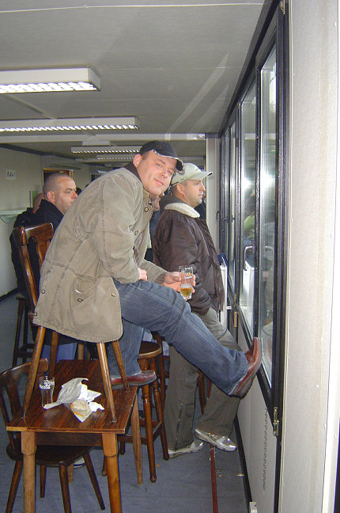
AvhG heeft zijn eigen VIP-tribune gebouwd.
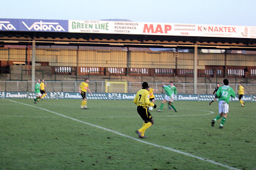
Wissels in de tweede helft: Senden, Bodor, Lachambre en Oper voor
Derksen, Vicelich, Colinet en Sonko. Later werd Cziommer nog gewisseld
door Leemans nadat de Duitser geblesseerd raakte.
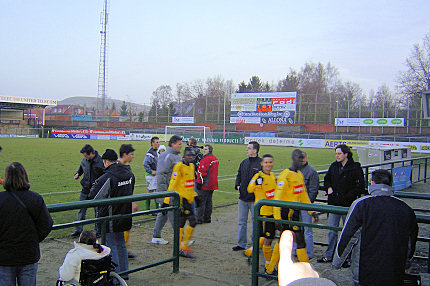
De wedstrijd eindigt in een 0-1 nederlaag door een doelpunt uit een vrije trap
vlak na rust van Vedran Pelic.
De 150 toeschouwers (waarvan 100 Rodafans) zagen een teleurstellende
wedstrijd met een geweldig lichtpunt:
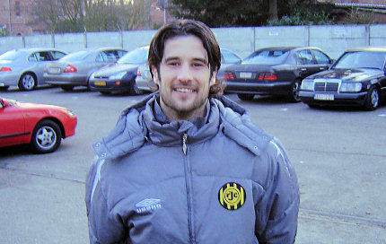
.... onze nieuwe aanvoerder!
Foto's: Marco en Danniëlle (thanx)
© Koempels Pleasure Dome
|